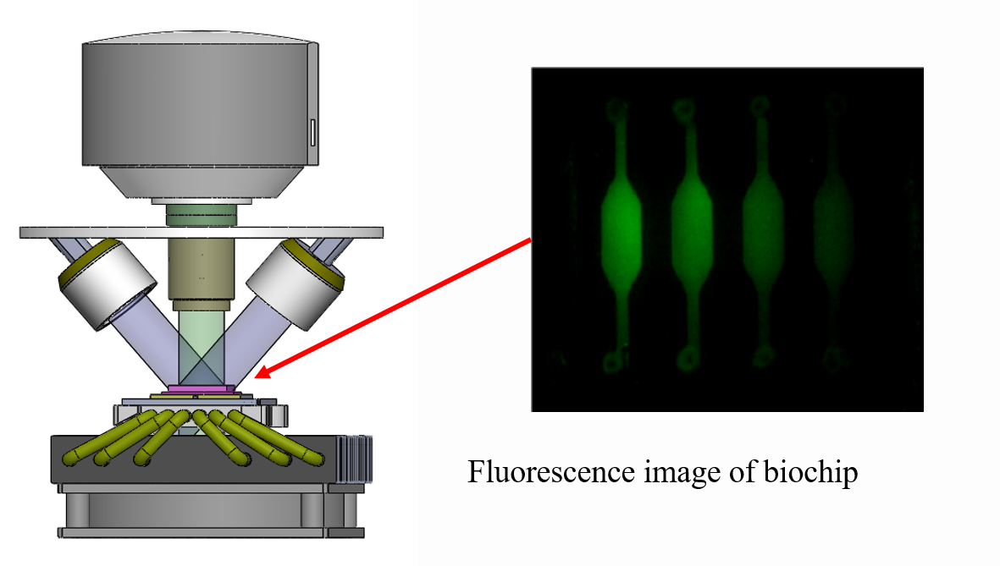
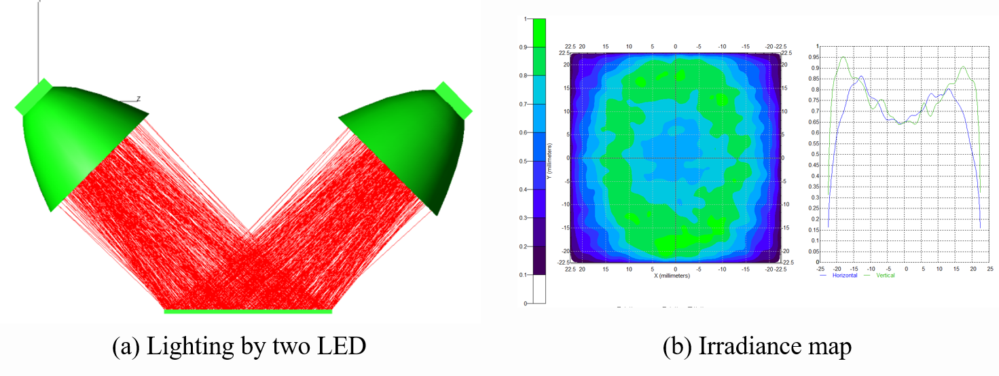
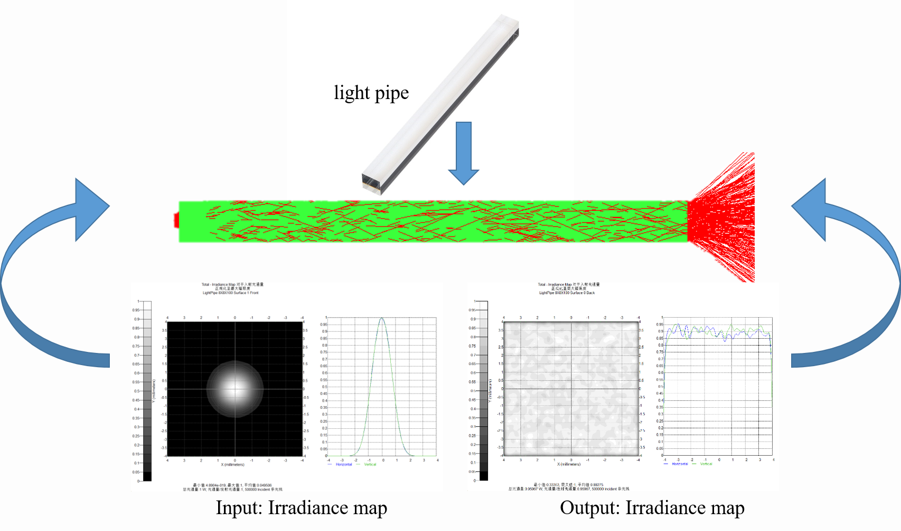
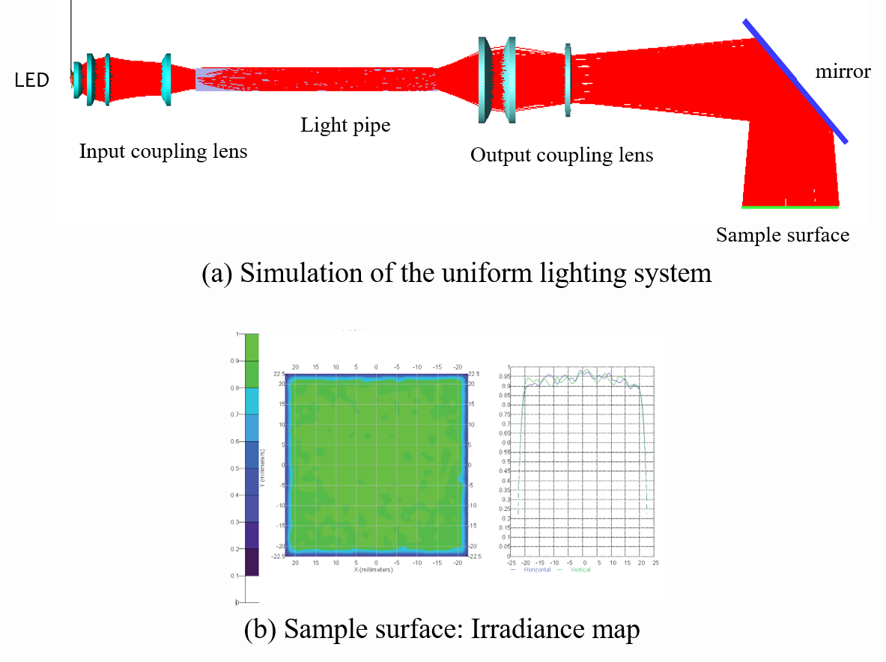
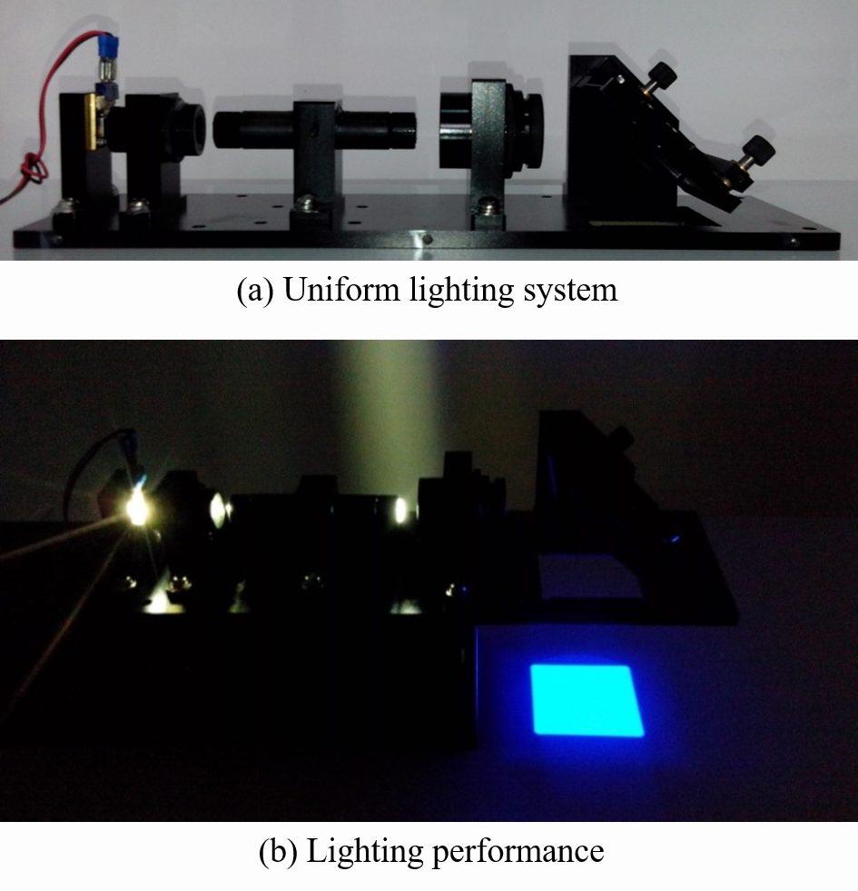
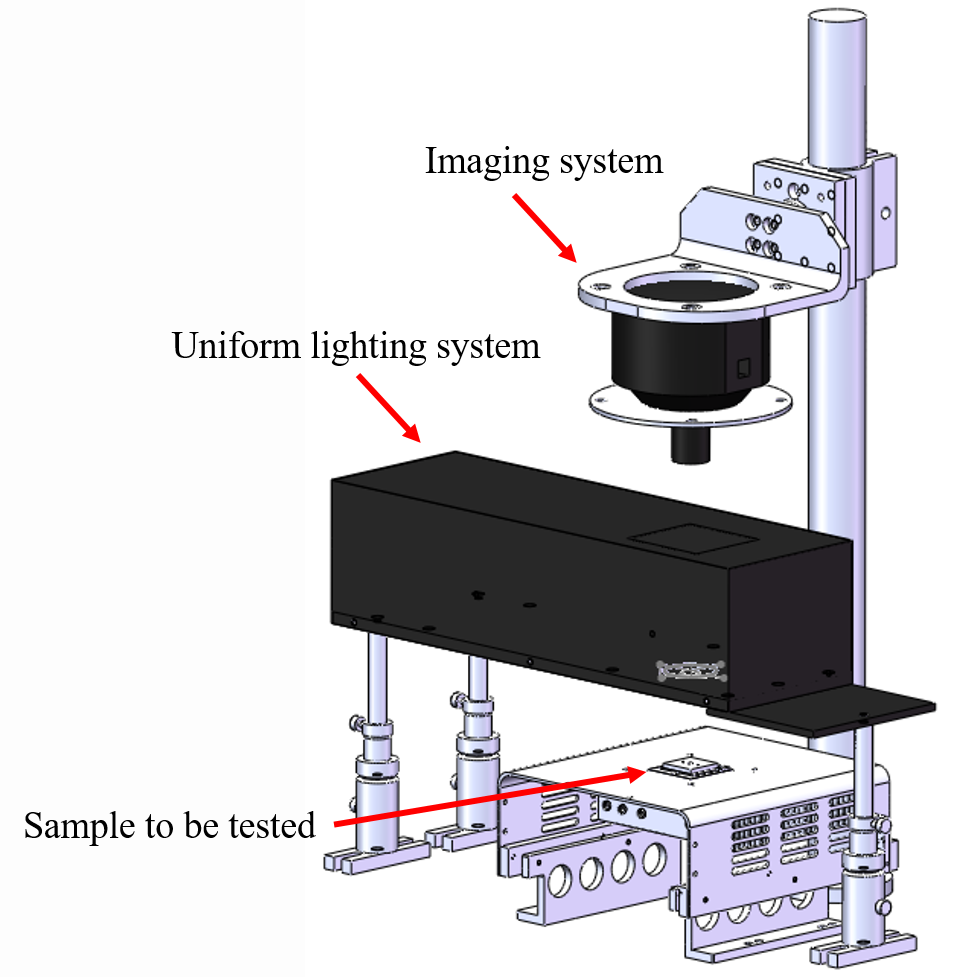
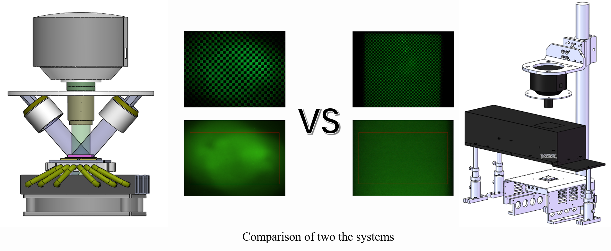

Research on issues about non-uniform fluorescence imaging of microfluidic qPCR

Abstract
Microfluidic chip, as an important content of micro total analysis system, has become a hot research field in recent years. Microfluidic qPCR technology, based on microfluidic chip, with fast speed, low energy consumption, low pollution, is widely cared by the international experts in the fields of molecular biology and medical diagnostics. Fluorescence imaging is an important method of fluorescence detection of microfluidic qPCR, which get the fluorescence signals of all reaction chambers at the same time. Non-uniform Fluorescence imaging is the main factor affecting quantitative accuracy of qPCR. Based on the analysis of qPCR process, the uniformity requirement of fluorescence imaging has been defined. To acquire more accurate results of qPCR, a fluorescence detection module for Microfluidic qPCR is designed.
Firstly, based on the mathematical principles of quantitative PCR, the influence of non-uniform fluorescence imaging is analyzed through differential operation. And the uniformity requirement of fluorescence imaging has been defined. Secondly, the factors contributing to the non-uniform fluorescence imaging is analyzed and divided into two parts, the non-uniformity of the excitation process and the non-uniformity of the imaging process. To solve the non-uniformity of the excitation process, the original oblique incident light path is changed into the coaxial incident light path. What’s more, the light pipe is used in the incident light path, which is widely used in lithography technology for improving uniformity of excitation light. The main factors are analyzed to solve the non-uniformity of the imaging process. Choosing a suitable camera and optimizing lens parameters setting are convenient and efficient method for improving the uniformity of the imaging process.
Fluorescence detection module is tested by the fluorescence imaging of sodium fluorescein solution. Compared with the oblique incident light path, light pipe based coaxial incident light path greatly improve the uniformity of fluorescence imaging. What’s more, the coaxial structure is convenient for the subsequent expansion, such as the using of filter wheel. Improved fluorescence detection system is also used in the fluorescence signal acquisition of microfluidic qPCR. And the results show that the measurement accuracy meets the requirements.
Problem: Nonuniformity of fluorescence imaging

Reason: Non-uniform illumination

Method: Homogenizer based on light pipe

Solution: Design and Implementation



Comparison

WANG Huadong
Postdoctoral Research Assistant
My research interests include optics, spectroscopy and computer vision.
Publications
The study of non-uniform illumination of high-throughput microfluidic qPCR